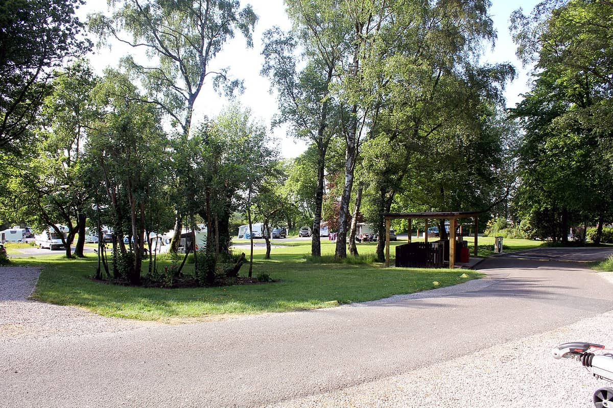
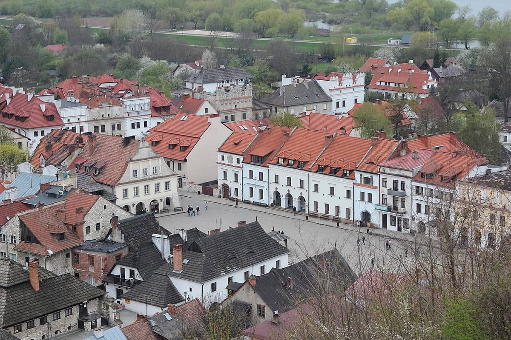
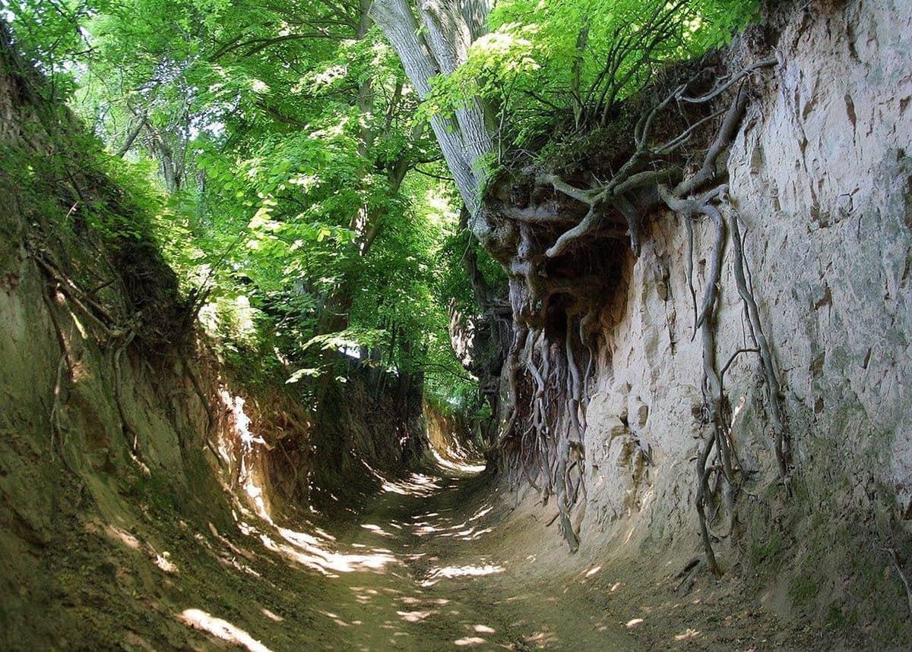

od 290 zł / noc
od 290 zł / nocdo 4 osób
Domek w winnicy
Drewniany domek z tarasem i widokiem na rzędy winorośli. Dla pary albo rodziny do 4 osób - wieczorem wino w altanie, rano kawa na tarasie.

Cisza, widok na winorośl i lasy, wieczorem wino z naszej winnicy w altanie i ognisko pod gwiazdami. Wybierz daty i sprawdź, co jest wolne.
W domku, w kamperze albo pod namiotem - wszystko na terenie winnicy, z dostępem do prądu, wody i toalety. Gości jest niewielu, więc jest cicho i prywatnie.
od 290 zł / nocDrewniany domek z tarasem i widokiem na rzędy winorośli. Dla pary albo rodziny do 4 osób - wieczorem wino w altanie, rano kawa na tarasie.

od 90 zł / nocRówne miejsce na trawie dla kampera albo przyczepy, przy winnicy, z dala od drogi. Prąd i woda na miejscu, toaleta na terenie.
 od 60 zł / noc
od 60 zł / nocNamiot na łące przy winnicy, z widokiem na lasy i łąki. Wieczorem ognisko i gwiazdy - bez świateł miasta.
Degustację umawiasz wcześniej - telefonicznie albo przez formularz. Próbujesz win z winnicy, rozmawiasz z gospodarzem o uprawie winorośli, a do wina można kupić świeży miód.

Ocena i tematy opinii z wizytówki Google (stan na 25.11.2026). Na gotowej stronie pokażemy opinie z linkiem do źródła.
Do Kazimierza Dolnego jest kilkanaście minut autem, do wąwozu Korzeniowy Dół 10 minut. Odległości liczyliśmy od winnicy po drodze.

Renesansowe kamienice, rynek ze studnią, Góra Trzech Krzyży i bulwar nad Wisłą. Najbliższe miasteczko z restauracjami i sklepami.

Lessowy wąwóz z odsłoniętymi korzeniami drzew na ścianach - jeden z najbardziej znanych spacerów w okolicy Kazimierza.

Ruiny zamku na wzgórzu po drugiej stronie Wisły, z widokiem na dolinę rzeki. Drogą przez most w Puławach.
Wybierz daty i rodzaj noclegu, zobacz cenę za cały pobyt i wyślij rezerwację prosto do gospodarza.